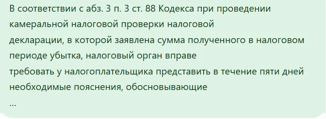
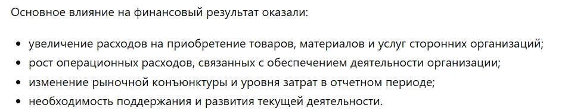

Консультации по ИИ один на один
Один на один, на вашей реальной задаче: вы уходите с готовым запросом к ИИ и знаете, где ему не доверять
Если за первые 15 минут встречи вы не увидели результата — расходимся без оплаты
Для кого
Одна консультация — два угла: бухгалтеру помогаю отдать рутину ИИ, собственнику — понять свои цифры
Рутина уходит машине, подпись и ответственность остаются вашими
Отчётность, которую вы наконец понимаете сами
Что останется после встречи
Готовый запрос к ИИ под вашу задачу — всегда; чек-лист или запись встречи — если они пригодятся
— и понимание, где ИИ можно доверять, а где нужна ваша проверка
Как это работает
Требование, пояснительная, сверка; я смотрю, смогу ли помочь именно с ней
Встреча онлайн, площадку выбираем вместе
Сначала обезличиваем, потом ставим задачу ИИ и проверяем ответ
Не увидели результата на своём примере — расходимся без оплаты
А если нужно — ещё с чек-листом или записью встречи
Мой разбор, а не отзыв
Случай из моей практики: что я дала ИИ, что он сделал и что я проверила сама
Проверить цифры, найти обоснование и написать пояснение вручную
Даю ИИ отрывок требования без шапки и реквизитов; он выстраивает последовательность ответа и формулировки по каждому пункту, цифры и итог проверяю я
В соответствии с абз. 3 п. 3 ст. 88 Кодекса при проведении камеральной налоговой проверки налоговой декларации, в которой заявлена сумма полученного в налоговом периоде убытка, налоговый орган вправе требовать у налогоплательщика представить в течение пяти дней необходимые пояснения, обосновывающие …
Основное влияние на финансовый результат оказали:


Ссылки на нормы — первое, что я проверяю в ответе ИИ